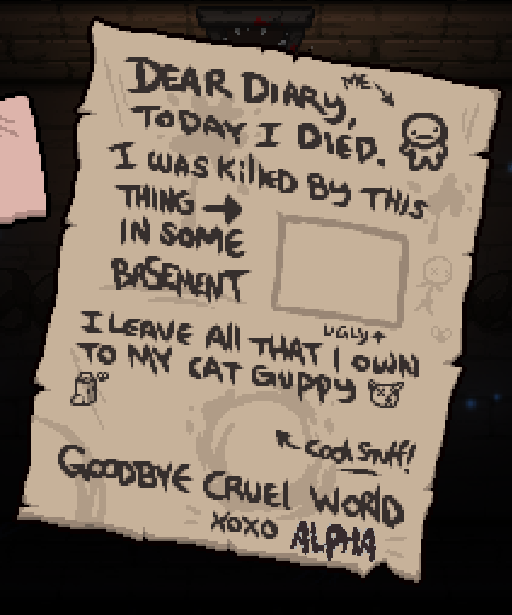

Character Template ReadMe
Death Portraits
This is mostly like Character menu, open death portraits.png with your editor remove what I put in there and replace it with your content.
you do not need to do anything for the tainted character unless you're like me and made the character have a different name on the tainted side OMEGA instead of ALPHA. If you did just make sure to put your tainted character's name in there too.
Death Portraits anm2
If you skipped the second part of Character menu now go back and do that and this section at the same time
Ok, now we just need to do the death screen anm2, so open death screen.anm2
Duplicate Alpha, renaming it your characters name.
Then delete Alpha.
Now this is where it's a little different, the only thing you need to change in this file is the Name sprite. If you want to change other things go ahead of course, but I won't be covering that.
Once your done save it.
For your tainted character you need to do the same thing, but in death screen alt.anm2.
Example of a correctly working death screen
